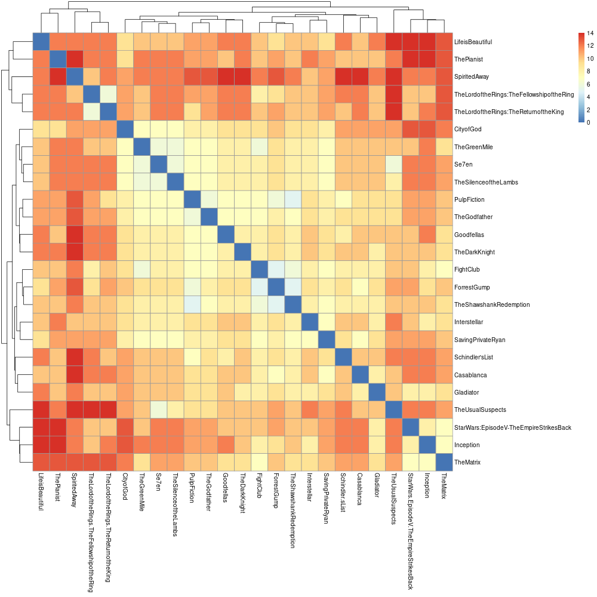
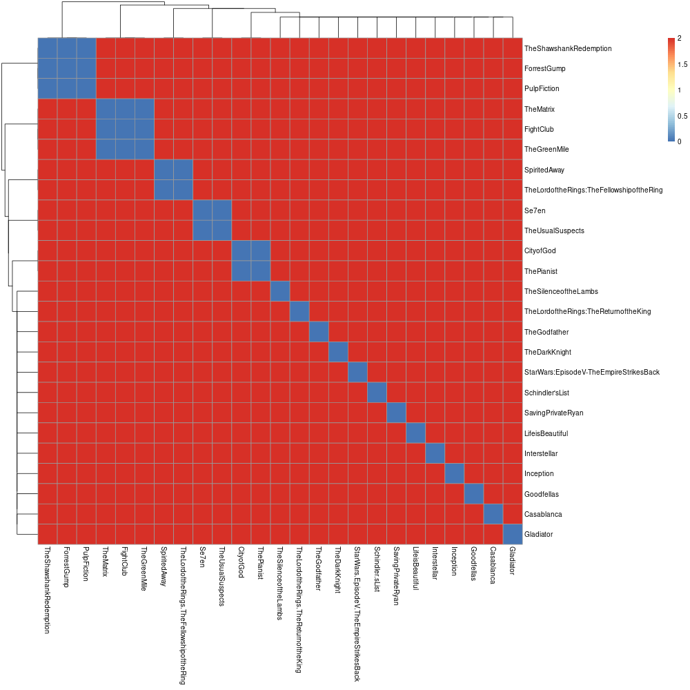
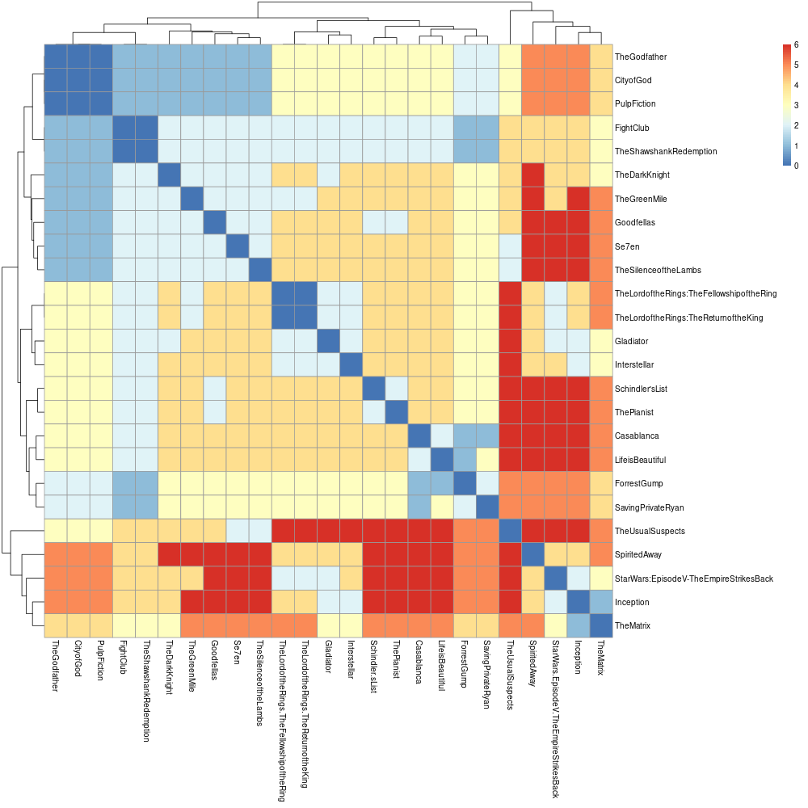
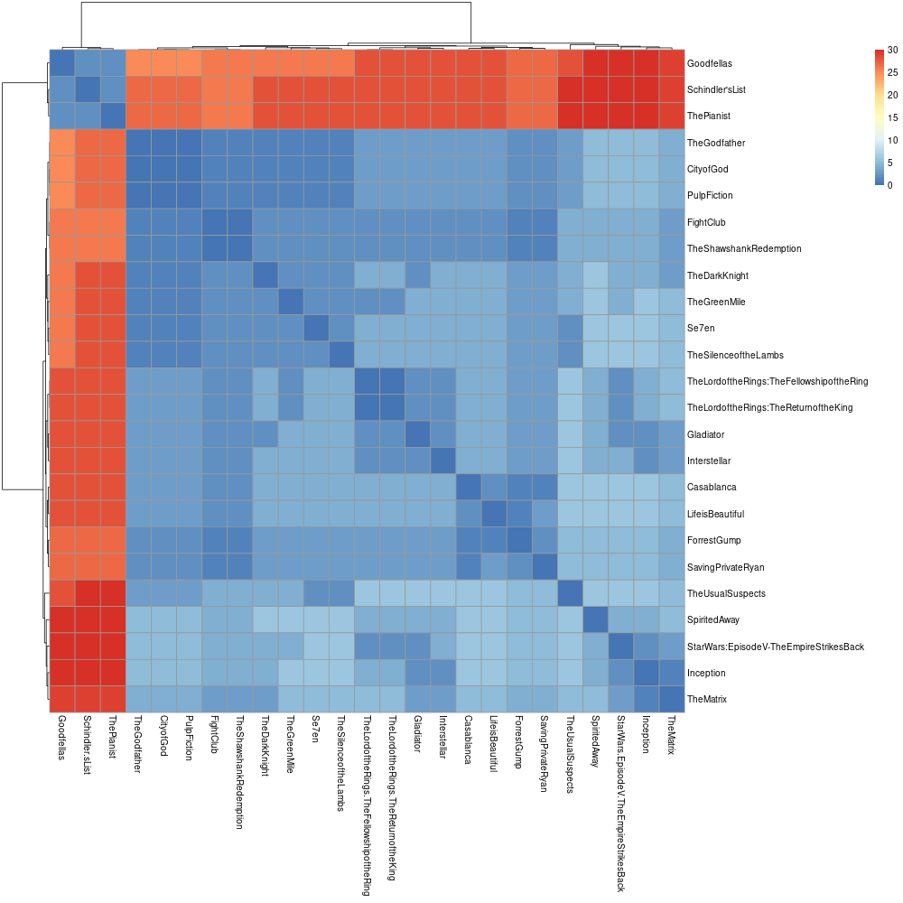
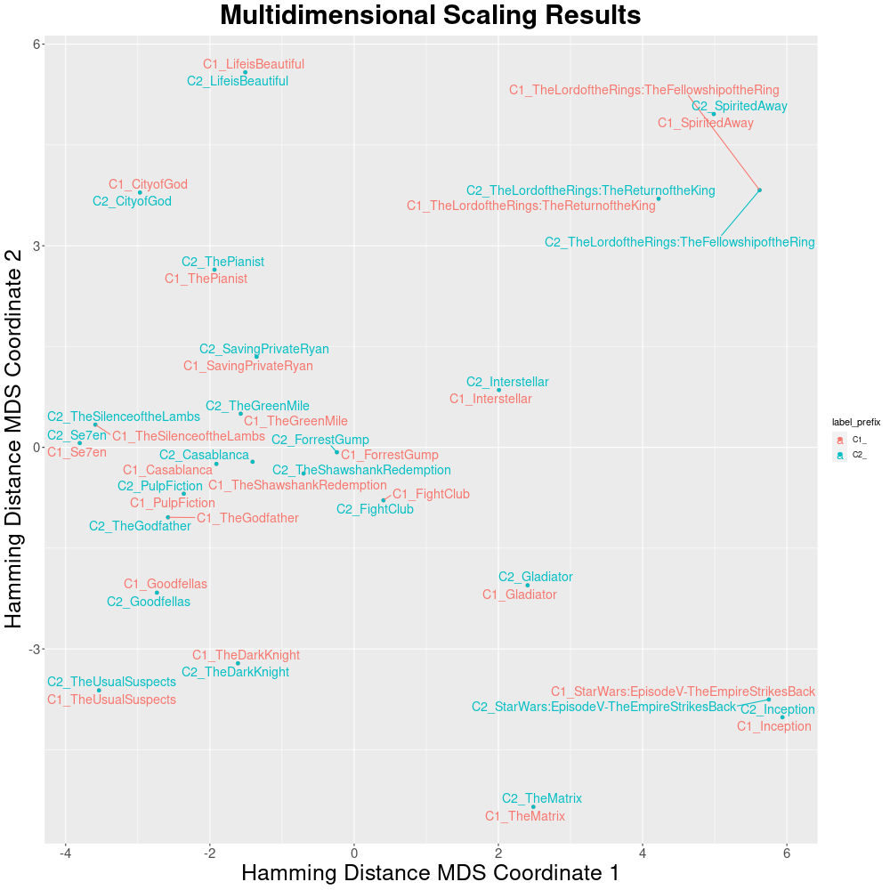
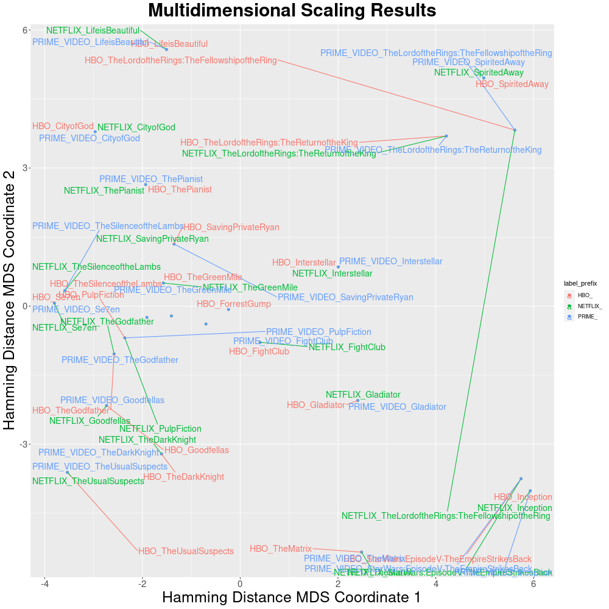

Tutorial: JSON format
Google Colab notebook
Try out Pheno-Ranker using our Google Colab notebook. You can view it without signing in, but running the code requires a Google account.
We also have a local copy of the notebook that can be downloaded from the repo.
This page provides brief tutorials on how to perform data conversion by using Pheno-Rankercommand-line interface.
About this tutorial
This tutorial deliberately uses generic JSON data (i.e., movies) to illustrate the capabilities of Pheno-Ranker, as starting with familiar examples can help you better grasp its usage.
Once you are comfortable with the concepts using movie data, you will find it easier to apply Pheno-Ranker to real GA4GH standards. For specific examples, please refer to the cohort and patient pages in this documentation.
Moviepackets:¶
For the tutorial we will use the format Moviepackets to demonstrate the power of Pheno-Ranker with any JSON file.
MoviePackets logo
What is a Moviepacket (MXF) file?
A Moviepacket is an invented format  designed to describe movies, analogous to Phenopackets v2 used for pheno-clinical data.
designed to describe movies, analogous to Phenopackets v2 used for pheno-clinical data.
Imagine you have a catalog of 25 movies described in JSON format. Each movie has several properties (a.k.a. terms).
[
{
"title": "TheShawshankRedemption",
"genre": [
"Drama"
],
"year": 1994,
"country": "USA",
"rating": 9.3
},
{
"title": "TheGodfather",
"genre": [
"Crime",
"Drama"
],
"year": 1972,
"country": "USA",
"rating": 9.2
},...
]
You are interested in checking the variety of your catalog and plan to use Pheno-Ranker. The first thing that we are going to create is a configuration file.
What is a Pheno-Ranker configuration file?
A configuration file is a text file in YAML format (JSON is also accepted) that serves to initialize some variables. It is particularly important when you are not using the two supported formats out-of-the-box that are BFF and PXF.
Do I need to create a configuration file?
This file only has to be created if you are working with your own JSON format.
If your file format resembles Moviepackets, you can use that file directly. Just ensure you modify the terms to align with your data.
Creating a configuration file¶
To create a configuration file, start by reviewing the example file provided with the installation. The goal is to replace the contents of such file with those from your project. If your movies did not have array-based properties the configuration file will look like this:
# Set the format
format: MXF # Optional unless you have array-based properties
# Set the primary key for the objects
primary_key: title
# Set the allowed terms / properties
allowed_terms: [country,genre,year]
But because your data has the term genre, which is an array the file will look like this:
# Set the format
format: MXF
# Set the primary key for the objects
primary_key: title
# Set the allowed terms / properties
allowed_terms: [country,genre,year]
# Set the terms which are arrays
array_terms: [genre]
# Set the regex to perform the substitution in array elements
array_regex: '^(\w+):(\d+)'
# Set the path for array properties
id_correspondence:
MXF:
genre: genre
In the table below we show which parameters are needed depending on the format:
| Format | Required properties | Optional properties | Pre-configured |
|---|---|---|---|
| BFF / PXF | primary_key, allowed_terms, array_terms, array_regex, id_correspondence |
format |
✓ |
Others (array) |
format, primary_key, allowed_terms, array_terms, id_correspondence |
array_regex |
|
Others (non-array) |
primary_key, allowed_terms |
format |
- Where:
- format, is a
stringthat defines your particular format. In this caseMXF. Note that it has to match that ofid_correspondence. - primary_key, the key that will be used as an item identifier.
- allowed_terms, is an
arrayto define the terms that can be used with the flags--include-termsand--exclude-terms. - array_terms, is an
arrayto enumerate which properties are arrays. - array_regex, it's an
stringto parse flattened keys. It's used in conjunction withid_correspondence. - id_correspondence, is an
objectthat (in combination witharray_regex) serves to rename array elements and not rely on numeric indexes.
- format, is a
Running Pheno-Ranker¶
Once you have created the mapping file you can proceed to run pheno-ranker with the command-line interface.
Example 1: Let's start by using all terms¶
The result is a file named matrix.txt. Find below the result of the clustering with R.
Included R scripts
You can find in the link below a few examples to perform clustering and multimensional scaling with your data:

Example 2: Let's cluster by year¶

Example 3: Let's cluster by genre¶

Example 4: Let's apply weights to genre¶
We will use the file t/movies_weigths.yaml that has the following content:
pheno-ranker -r t/movies.json --include-terms genre --w t/movies_weigths.yaml --config t/movies_config.yaml

Imagine you have several MoviePacket catalogs and you want to compare the similarity among them.
The way you will compute this with Pheno-Ranker is similar to intra-catalog, the only thing to have in mind is that the catalogs (i.e., cohorts) will have a preffix so that we can identify them.
Example 1: Default catalog (cohort) nomenclature¶
For demonstration purposes, in this example we are re-using the same file (t/movies.json)
After executing this command you will obtain a file named matrix.txt which is a matrix consisting of all (25+25)*(25+25) pairwise comparisons.
Dimensionality reduction
We will use the included R scripts to perform dimensionality reduction via MDS. Note that you can use other dimensinality reduction techniques such as t-SNE or UMAP.

By default, the ids in each catalog will be renamed to C1_, C2_ and so on, but you can add your own preffixes with --append-prefix.
Example 2: Set up catalog nomenclature prefixes¶
pheno-ranker -r t/movies.json t/movies.json t/movies.json --append-prefixes NETFLIX HBO PRIME_VIDEO --config t/movies_config.yaml

Imagine you'd like to discover movies similar to a specific one, such as Interstellar.
Step 1: Isolate the Movie¶
To single out the 'Interstellar' movie data:
This command will carry out a dry-run, producing an extracted JSON object named Interstellar.json.
{
"country" : "USA",
"genre" : [
"Adventure",
"Drama",
"Sci-Fi"
],
"rating" : 8.6,
"title" : "Interstellar",
"year" : 2014
}
Step 2: Rank Similar Movies¶
Next, run the following command to initiate the ranking process:
This will output the results to the console and additionally save them in a file titled rank.txt.
| RANK | REFERENCE(ID) | TARGET(ID) | FORMAT | LENGTH | WEIGHTED | HAMMING-DISTANCE | DISTANCE-Z-SCORE | DISTANCE-P-VALUE | DISTANCE-Z-SCORE(RAND) | JACCARD-INDEX | JACCARD-Z-SCORE | JACCARD-P-VALUE |
|---|---|---|---|---|---|---|---|---|---|---|---|---|
| 1 | Interstellar | Interstellar | MXF | 7 | False | 0 | -3.994 | 0.0000325 | -2.6458 | 1.000 | 4.529 | 0.0002087 |
| 2 | SavingPrivateRyan | Interstellar | MXF | 10 | False | 7 | -0.846 | 0.1988972 | 1.2649 | 0.300 | 0.438 | 0.7129606 |
| 3 | TheShawshankRedemption | Interstellar | MXF | 10 | False | 8 | -0.396 | 0.3461273 | 1.8974 | 0.200 | -0.146 | 0.8742001 |
| 4 | Se7en | Interstellar | MXF | 11 | False | 8 | -0.396 | 0.3461273 | 1.5076 | 0.273 | 0.279 | 0.7646809 |
| 5 | Gladiator | Interstellar | MXF | 11 | False | 8 | -0.396 | 0.3461273 | 1.5076 | 0.273 | 0.279 | 0.7646809 |
| 6 | Inception | Interstellar | MXF | 11 | False | 8 | -0.396 | 0.3461273 | 1.5076 | 0.273 | 0.279 | 0.7646809 |
| 7 | FightClub | Interstellar | MXF | 10 | False | 8 | -0.396 | 0.3461273 | 1.8974 | 0.200 | -0.146 | 0.8742001 |
| 8 | TheGreenMile | Interstellar | MXF | 11 | False | 8 | -0.396 | 0.3461273 | 1.5076 | 0.273 | 0.279 | 0.7646809 |
| 9 | TheSilenceoftheLambs | Interstellar | MXF | 11 | False | 8 | -0.396 | 0.3461273 | 1.5076 | 0.273 | 0.279 | 0.7646809 |
| 10 | ForrestGump | Interstellar | MXF | 11 | False | 9 | 0.054 | 0.5215214 | 2.1106 | 0.182 | -0.253 | 0.8948480 |
| 11 | TheMatrix | Interstellar | MXF | 11 | False | 9 | 0.054 | 0.5215214 | 2.1106 | 0.182 | -0.253 | 0.8948480 |
| 12 | CityofGod | Interstellar | MXF | 11 | False | 9 | 0.054 | 0.5215214 | 2.1106 | 0.182 | -0.253 | 0.8948480 |
| 13 | PulpFiction | Interstellar | MXF | 11 | False | 9 | 0.054 | 0.5215214 | 2.1106 | 0.182 | -0.253 | 0.8948480 |
| 14 | TheGodfather | Interstellar | MXF | 11 | False | 9 | 0.054 | 0.5215214 | 2.1106 | 0.182 | -0.253 | 0.8948480 |
| 15 | Goodfellas | Interstellar | MXF | 12 | False | 10 | 0.504 | 0.6927786 | 2.3094 | 0.167 | -0.341 | 0.9100849 |
| 16 | TheLordoftheRings:TheFellowshipoftheRing | Interstellar | MXF | 12 | False | 10 | 0.504 | 0.6927786 | 2.3094 | 0.167 | -0.341 | 0.9100849 |
| 17 | Casablanca | Interstellar | MXF | 12 | False | 10 | 0.504 | 0.6927786 | 2.3094 | 0.167 | -0.341 | 0.9100849 |
| 18 | Schindler'sList | Interstellar | MXF | 12 | False | 10 | 0.504 | 0.6927786 | 2.3094 | 0.167 | -0.341 | 0.9100849 |
| 19 | LifeisBeautiful | Interstellar | MXF | 12 | False | 10 | 0.504 | 0.6927786 | 2.3094 | 0.167 | -0.341 | 0.9100849 |
| 20 | SpiritedAway | Interstellar | MXF | 12 | False | 10 | 0.504 | 0.6927786 | 2.3094 | 0.167 | -0.341 | 0.9100849 |
| 21 | TheLordoftheRings:TheReturnoftheKing | Interstellar | MXF | 12 | False | 10 | 0.504 | 0.6927786 | 2.3094 | 0.167 | -0.341 | 0.9100849 |
| 22 | TheDarkKnight | Interstellar | MXF | 12 | False | 10 | 0.504 | 0.6927786 | 2.3094 | 0.167 | -0.341 | 0.9100849 |
| 23 | StarWars:EpisodeV-TheEmpireStrikesBack | Interstellar | MXF | 12 | False | 10 | 0.504 | 0.6927786 | 2.3094 | 0.167 | -0.341 | 0.9100849 |
| 24 | TheUsualSuspects | Interstellar | MXF | 13 | False | 12 | 1.403 | 0.9197335 | 3.0509 | 0.077 | -0.866 | 0.9689622 |
| 25 | ThePianist | Interstellar | MXF | 13 | False | 12 | 1.403 | 0.9197335 | 3.0509 | 0.077 | -0.866 | 0.9689622 |
Of course you can perform tha ranking against multiple cohorts and select specific terms.
pheno-ranker -r t/movies.json t/movies.json --append-prefixes NETFLIX HBO -t Interstellar.json --include-terms genre year --config t/movies_config.yaml --max-out 10
| RANK | REFERENCE(ID) | TARGET(ID) | FORMAT | LENGTH | WEIGHTED | HAMMING-DISTANCE | DISTANCE-Z-SCORE | DISTANCE-P-VALUE | DISTANCE-Z-SCORE(RAND) | JACCARD-INDEX | JACCARD-Z-SCORE | JACCARD-P-VALUE |
|---|---|---|---|---|---|---|---|---|---|---|---|---|
| 1 | NETFLIX_Interstellar | Interstellar | MXF | 4 | False | 0 | -3.561 | 0.0001845 | -2.0000 | 1.000 | 4.387 | 0.0003529 |
| 2 | HBO_Interstellar | Interstellar | MXF | 4 | False | 0 | -3.561 | 0.0001845 | -2.0000 | 1.000 | 4.387 | 0.0003529 |
| 3 | HBO_FightClub | Interstellar | MXF | 5 | False | 4 | -0.779 | 0.2179810 | 1.3416 | 0.200 | -0.068 | 0.8572146 |
| 4 | NETFLIX_Inception | Interstellar | MXF | 6 | False | 4 | -0.779 | 0.2179810 | 0.8165 | 0.333 | 0.675 | 0.6275454 |
| 5 | HBO_TheShawshankRedemption | Interstellar | MXF | 5 | False | 4 | -0.779 | 0.2179810 | 1.3416 | 0.200 | -0.068 | 0.8572146 |
| 6 | NETFLIX_TheLordoftheRings:TheReturnoftheKing | Interstellar | MXF | 6 | False | 4 | -0.779 | 0.2179810 | 0.8165 | 0.333 | 0.675 | 0.6275454 |
| 7 | HBO_Gladiator | Interstellar | MXF | 6 | False | 4 | -0.779 | 0.2179810 | 0.8165 | 0.333 | 0.675 | 0.6275454 |
| 8 | NETFLIX_Gladiator | Interstellar | MXF | 6 | False | 4 | -0.779 | 0.2179810 | 0.8165 | 0.333 | 0.675 | 0.6275454 |
| 9 | NETFLIX_TheShawshankRedemption | Interstellar | MXF | 5 | False | 4 | -0.779 | 0.2179810 | 1.3416 | 0.200 | -0.068 | 0.8572146 |
| 10 | NETFLIX_FightClub | Interstellar | MXF | 5 | False | 4 | -0.779 | 0.2179810 | 1.3416 | 0.200 | -0.068 | 0.8572146 |
Expected times and memory:
| Rows | Cohort | Patient | ||
|---|---|---|---|---|
| Number | Time | RAM | Time | RAM |
| 100 | 0.5s | <1GB | <0.5s | <1GB |
| 1K | 1s | <1GB | <0.5s | <1GB |
| 5K | 15s | <1GB | <0.5s | <1GB |
| 10K | 1m30s | <1GB* | <1s | <1GB |
| 50K | 1h | <1GB* | 3s | <1GB |
| 100K | - | - | 6s | <1GB |
| 1M | - | - | 1m | <4GB |
1 x Intel(R) Xeon(R) W-1350P @ 4.00GHz - 32GB RAM - SSD
* About RAM usage in cohort mode
After reaching 5K rows, Pheno-Ranker adopts a RAM-efficient approach, where it calculates the entire symmetric matrix without storing it in memory.